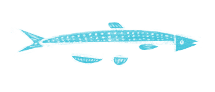
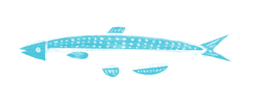
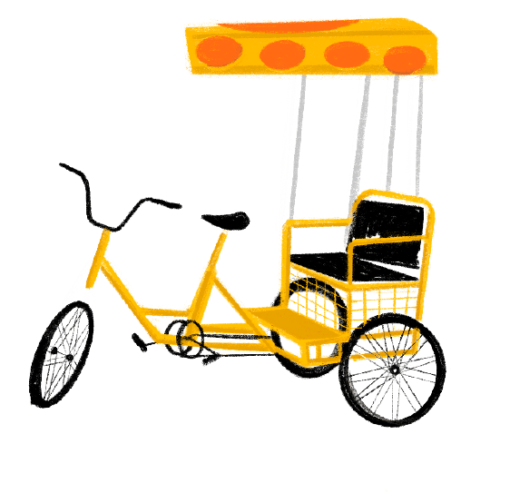
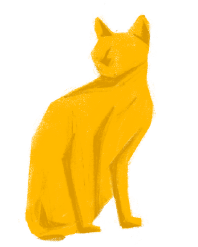
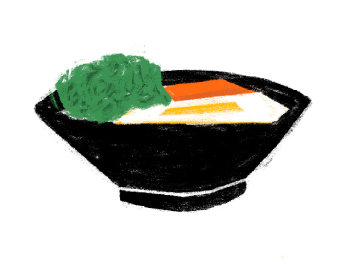
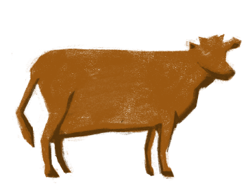
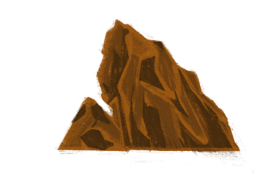
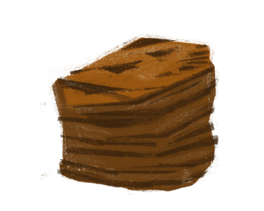

船隻泊岸途中欣賞避風塘之景。
一浪接一浪，渡輪泊岸了。
對岸碼頭的渡輪正準備開出。
Take a glimpse of the typhoon shelter while the boat is departing.
Waves followed by waves, the boat has arrived.
Yet, another boat has departed.

長洲既可體驗風土人情，亦可細看大自然景色。
不想遠離人間煙火，不妨到訪這繁忙的小島。

島嶼有多個起點，無論是哪一個選擇，請好好細看沿途風景！

由維多利亞港移動到空無一人的島嶼，再泊岸於坪洲的邊端。

香港的最南端，充滿著石頭與海藻。
這一渡，遠離市區。

可近看水平線的流動，抑或遠望連綿山脈，從不同角度感受海洋。

看見島嶼與自己愈來愈近。
這一渡，不要錯過清水灣與鯉魚門的景色。

這漫長的旅程，由郊外，到山巒，再到城市的最邊端。